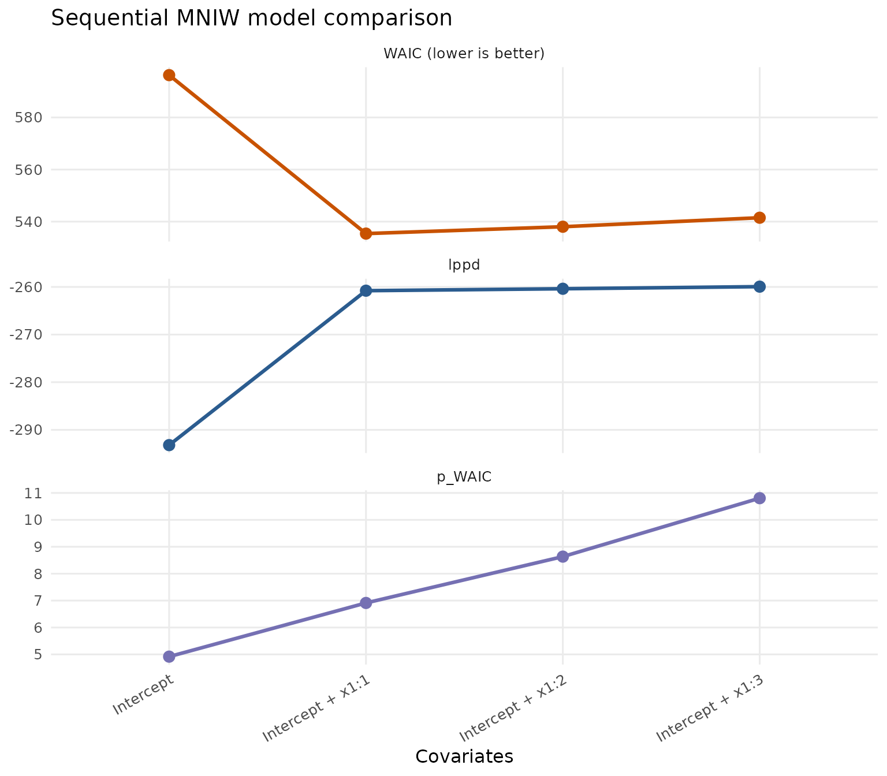

Analytical and Sample-Based MNIW Model Comparison
Source:vignettes/model-comparison.Rmd
model-comparison.RmdThis vignette adapts Sudipto Banerjee’s development example on
analytical WAIC for matrix-normal inverse-Wishart (MNIW) multivariate
regression. It uses the installed package and generated data, so it can
run without the development material/ directory or external
data files.
The workflow fits a conjugate regression, compares analytical scores
with posterior-draw estimates, optionally checks the latter against
loo, and compares a sequence of covariate subsets.
Likelihood and posterior
For an response matrix and an design matrix , the observations are independent rows:
Here
is the actual posterior coefficient mean. In a precision-based
derivation it might instead be written
;
supply that product as mn, rather than the unscaled
parameter
.
Each response row is one WAIC observation: its response components are scored jointly. These helpers do not directly score an emulator whose likelihood has correlated spatial GP rows. Such a model needs its own likelihood factorization and definition of an observation.
Fit a multivariate regression
Generate two correlated responses. Only the first covariate has a nonzero coefficient in the generating model.
library(spDBL)
set.seed(42)
n <- 120L
X <- cbind(intercept = 1, x1 = seq(-1, 1, length.out = n),
x2 = rnorm(n), x3 = rnorm(n))
B <- rbind(c(0.8, -0.3), c(1.2, 0.7), c(0, 0), c(0, 0))
Sigma <- matrix(c(0.7, 0.25, 0.25, 0.5), 2)
Y <- X %*% B + matrix(rnorm(2 * n), n, 2) %*% chol(Sigma)Use a zero coefficient prior mean, identity coefficient row
covariance, identity inverse-Wishart scale, and
prior degrees of freedom. MNIW_R() returns all four
posterior parameters needed for analytical WAIC. The identity
H specifies independent likelihood rows.
p <- ncol(X)
q <- ncol(Y)
post <- MNIW_R(X, Y, H = diag(n), v = q + 2, S = diag(q),
C = matrix(0, p, q), Vb = diag(p))
analytical <- compute_analytical_waic(
Y, X, Mn = post$Vbnew, mn = post$Cnew,
Psi_n = post$Snew, nu_n = post$vnew)
unlist(analytical[c("WAIC", "lppd", "p_waic")])
#> WAIC lppd p_waic
#> 541.49264 -259.94080 10.80552
head(analytical$pointwise)
#> lppd p_waic elpd_waic WAIC
#> [1,] -1.854378 0.08479567 -1.939173 3.878346
#> [2,] -2.095335 0.10624721 -2.201582 4.403165
#> [3,] -2.064649 0.06647588 -2.131125 4.262250
#> [4,] -2.016538 0.07003685 -2.086575 4.173150
#> [5,] -2.475828 0.09705290 -2.572881 5.145762
#> [6,] -3.238006 0.17006015 -3.408066 6.816133Analytical calculation
Define , , and . The marginal predictive distribution for one row is multivariate Student t with degrees of freedom and scale . Its log density gives
The posterior variance of the row log likelihood is
where is the trigamma function. The returned totals are
$$ \operatorname{lppd}=\sum_i\operatorname{lppd}_i,\qquad p_{\rm WAIC}=\sum_i p_i,\qquad \operatorname{WAIC}=-2(\operatorname{lppd}-p_{\rm WAIC}). $$
The implementation uses Cholesky factors and triangular solves. Posterior simulation is unnecessary for these analytical quantities.
Compare with posterior draws
The imported mniw package supplies paired coefficient
and covariance draws. rMNIW() uses the coefficient
covariance Sigma = post$Vbnew with
prec = FALSE. Its X and V
components are arrays with dimensions p x q x S and
q x q x S.
set.seed(123)
draws <- mniw::rMNIW(4000L, Lambda = post$Cnew, Sigma = post$Vbnew,
Psi = post$Snew, nu = post$vnew, prec = FALSE)
sampled <- compute_sample_waic(Y, X, draws$X, draws$V,
return_log_lik = TRUE)
comparison <- data.frame(
Method = c("Analytical", "Posterior draws"),
lppd = c(analytical$lppd, sampled$lppd),
p_waic = c(analytical$p_waic, sampled$p_waic),
WAIC = c(analytical$WAIC, sampled$WAIC))
knitr::kable(comparison, digits = 3)| Method | lppd | p_waic | WAIC |
|---|---|---|---|
| Analytical | -259.941 | 10.806 | 541.493 |
| Posterior draws | -259.945 | 10.806 | 541.503 |
The analytical calculation is exact for the supplied MNIW posterior.
Draw-based estimates have Monte Carlo error. Both functions use the same
row-level likelihood, and compute_sample_waic() uses sample
variances with denominator
.
Optional comparison with loo
The returned log_lik matrix has draws in rows and
observations in columns. loo is optional; it is not needed
to compute either spDBL score.
if (requireNamespace("loo", quietly = TRUE)) {
reference <- loo::waic(sampled$log_lik)
comparison <- rbind(comparison, data.frame(
Method = "loo (same draws)",
lppd = reference$estimates["elpd_waic", "Estimate"] +
reference$estimates["p_waic", "Estimate"],
p_waic = reference$estimates["p_waic", "Estimate"],
WAIC = reference$estimates["waic", "Estimate"]))
knitr::kable(comparison, digits = 3)
}
#> Warning:
#> 3 (2.5%) p_waic estimates greater than 0.4. We recommend trying loo instead.| Method | lppd | p_waic | WAIC |
|---|---|---|---|
| Analytical | -259.941 | 10.806 | 541.493 |
| Posterior draws | -259.945 | 10.806 | 541.503 |
| loo (same draws) | -259.945 | 10.806 | 541.503 |
The two calculations using identical draws should agree up to
numerical precision. loo can warn about large pointwise
WAIC penalties. Its authors recommend PSIS leave-one-out
cross-validation for the additional diagnostics; the same
sampled$log_lik can be supplied to
loo::loo().
Compare sequential covariate subsets
Refit each subset using its corresponding prior. Keep the responses and the definition of an observation fixed across comparisons.
profile <- do.call(rbind, lapply(seq_len(p), function(k) {
X_k <- X[, seq_len(k), drop = FALSE]
fit <- MNIW_R(X_k, Y, H = diag(n), v = q + 2, S = diag(q),
C = matrix(0, k, q), Vb = diag(k))
score <- compute_analytical_waic(Y, X_k, fit$Vbnew, fit$Cnew,
fit$Snew, fit$vnew)
data.frame(Model = if (k == 1L) "Intercept" else
paste0("Intercept + x1:", k - 1L),
lppd = score$lppd, p_waic = score$p_waic, WAIC = score$WAIC)
}))
knitr::kable(profile, digits = 3)| Model | lppd | p_waic | WAIC |
|---|---|---|---|
| Intercept | -293.209 | 4.918 | 596.253 |
| Intercept + x1:1 | -260.788 | 6.912 | 535.400 |
| Intercept + x1:2 | -260.383 | 8.634 | 538.033 |
| Intercept + x1:3 | -259.941 | 10.806 | 541.493 |
metrics <- c("WAIC", "lppd", "p_waic")
labels <- c("WAIC (lower is better)", "lppd", "p_WAIC")
long <- do.call(rbind, lapply(seq_along(metrics), function(j)
data.frame(Model = profile$Model, Metric = labels[j],
Value = profile[[metrics[j]]])))
long$Model <- factor(long$Model, levels = profile$Model)
long$Metric <- factor(long$Metric, levels = labels)
colors <- stats::setNames(c("#c85200", "#2b5c8f", "#7570b3"), labels)
ggplot2::ggplot(long, ggplot2::aes(Model, Value, color = Metric, group = Metric)) +
ggplot2::geom_line(linewidth = 1.1) +
ggplot2::geom_point(size = 3) +
ggplot2::facet_wrap(~Metric, ncol = 1, scales = "free_y") +
ggplot2::scale_color_manual(values = colors) +
ggplot2::theme_minimal(base_size = 12) +
ggplot2::theme(legend.position = "none",
axis.text.x = ggplot2::element_text(angle = 30, hjust = 1),
panel.grid.minor = ggplot2::element_blank()) +
ggplot2::labs(title = "Sequential MNIW model comparison",
x = "Covariates", y = NULL)
Lower WAIC favors a model’s estimated predictive performance among these candidates. Neither lppd nor the effective-parameter penalty is guaranteed to increase monotonically with added covariates. The minimum is a comparative estimate, not a guarantee that the selected subset is the true model.
References
Watanabe, S. (2010). Asymptotic equivalence of Bayes cross validation and widely applicable information criterion in singular learning theory. Journal of Machine Learning Research, 11, 3571–3594.
Vehtari, A., Gelman, A., and Gabry, J. (2017). Practical Bayesian model evaluation using leave-one-out cross-validation and WAIC. Statistics and Computing, 27, 1413–1432.
The loo WAIC documentation describes its likelihood-array conventions and interpretation.